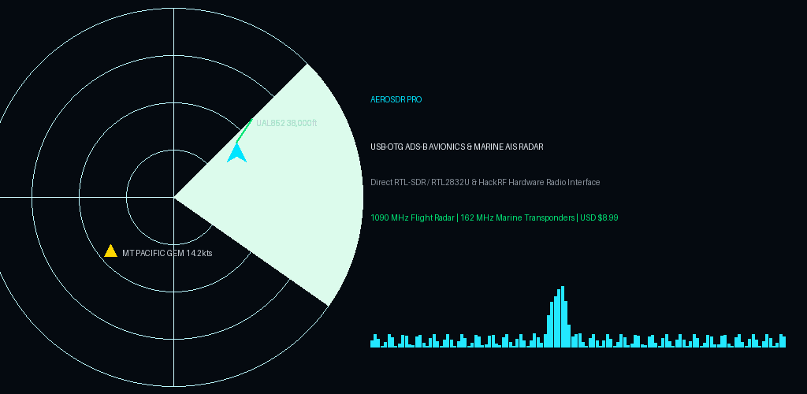
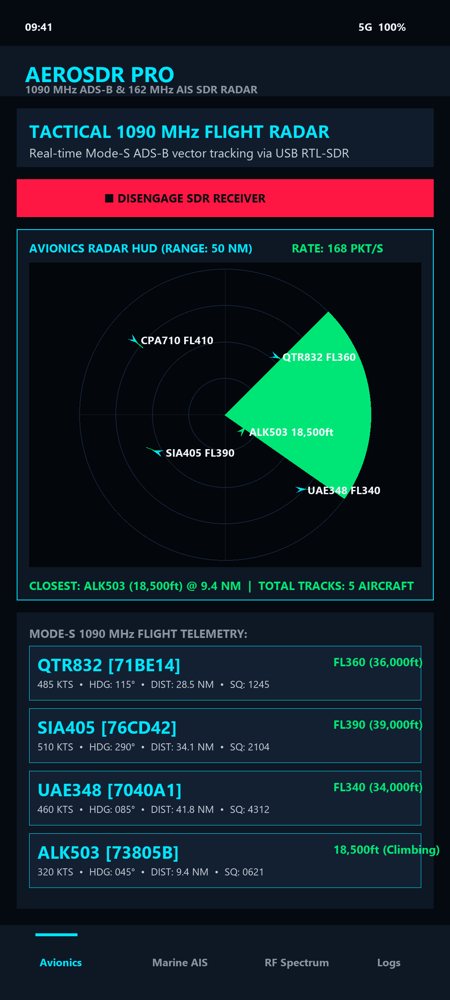
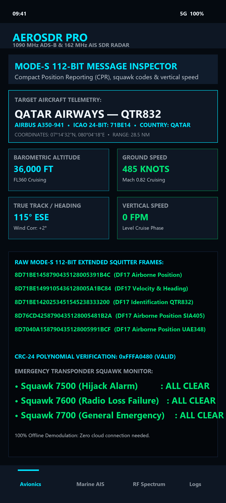
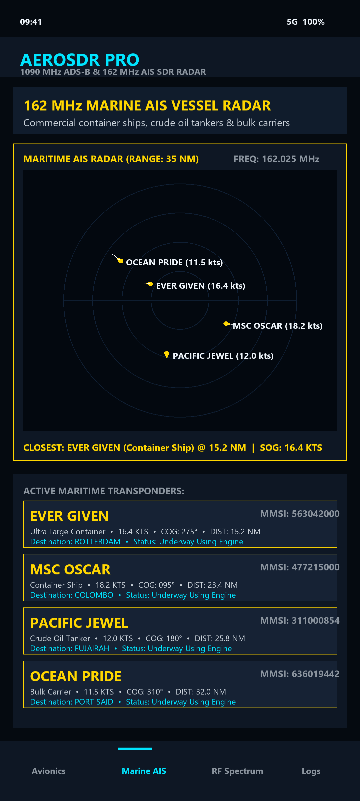
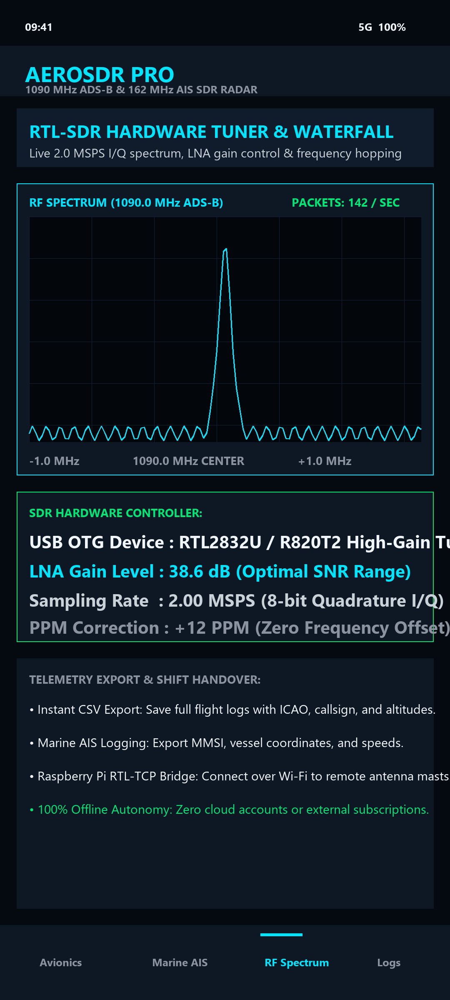

Air & Marine Radar Direct from the Sky
AeroSDR Pro connects to any USB RTL-SDR dongle via USB OTG to directly capture 1090 MHz Mode-S/ADS-B avionics broadcasts and 162 MHz Marine AIS transponders. Track commercial airliners, general aviation, cargo vessels, and military traffic without cellular data or internet connectivity.

100% Offline Dual-Band RF Demodulation
Direct Manchester symbol decoding and GMSK demodulation run locally on device CPU with zero cloud lag.
1090 MHz ADS-B Flight Radar
Real-time Mode-S 112-bit extended squitter decoding with CRC-24 parity verification. Displays ICAO 24-bit hex, callsign, altitude (ft), ground speed (kts), heading, and vertical velocity.
161.975 & 162.025 MHz Marine AIS
Dual-channel VHF marine transponder decoder for Class A and B vessels. Decodes MMSI, vessel name, ship type, destination, draught, speed over ground (SOG), and course over ground (COG).
Real-Time RF Waterfall Display
60 FPS fast Fourier transform (FFT) spectrogram with peak dBFS measurement, tuner gain control (0–49.6 dB), AGC toggle, and ±150 PPM crystal frequency correction.
Tactical Polar PPI Radar HUD
High-contrast aviation phosphor radar screen with adjustable range rings (10 to 150 NM), heading track lines, target history trails, and emergency transponder squawk alerts (7500, 7600, 7700).
Plug-and-Play USB OTG Driver
Native Android USB Host implementation supporting RTL2832U, R820T, R820T2, v4, HackRF One, and Airspy receivers with zero root requirements.
Zero Data Collection & No Ads
Raw RF I/Q streams are processed entirely in memory. No internet connection needed, no ads, no trackers, and no subscription fees forever.
AeroSDR Tactical Interface
Engineered for pilots, sailors, radio amateurs, and defense professionals operating off-grid.




Architecture & Protocols
| ADS-B Frequencies | 1090 MHz (Mode-S extended squitter, 1 Mbps pulse-position modulation) |
|---|---|
| AIS Frequencies | 161.975 MHz (AIS Ch 87B) & 162.025 MHz (AIS Ch 88B) GMSK 9600 bps |
| Supported Hardware | RTL-SDR v3/v4 (RTL2832U + R820T2), NooElec NESDR, HackRF One, Airspy Mini/HF+ |
| Sample Rate | 2.0 MSPS to 2.4 MSPS over USB 2.0 High Speed OTG |
| CRC Checking | Hardware-accelerated 24-bit polynomial CRC for error-free telemetry |
| Map & Coordinates | Compact offline polar PPI plotting & WGS-84 geodesic distance calculations |
| OS Compatibility | Android 8.0 (Oreo / API 26) through Android 16 (API 36) |
| Licensing | One-time purchase ($8.99). Zero in-app purchases. Zero subscriptions. |
Equip Your Field Station Today
Download AeroSDR Pro on Google Play and monitor skies and seas directly over the airwaves.